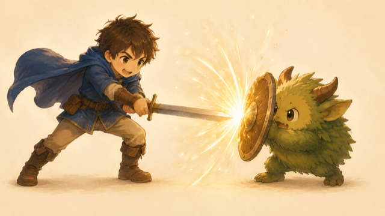
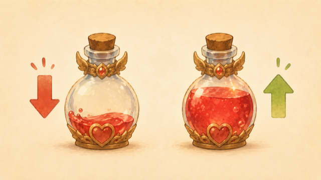

A02 たたかいの森 — 計算で たたかえ
+ - * / で 計算ができる。今日は それで たたかいましょう。
- 数を計算する（
+たす・-ひく・*かける・/わる） - ダメージ＝攻撃力−防御 のような計算ができる
- 変数の中身を増やす・減らす（
+=、++）
変数 も そのまま使うからね。
ステップ1 — 数を計算する
計算につかう記号（演算子）は、算数とほとんど同じ。まずは下を ▶ 実行 して、結果を見てみよう。
+ … たす ／ - … ひく* … かける（×のかわり） ／ / … わる（÷のかわり）*、÷ じゃなくて / なんだね。
もちろん、変数の中身どうしも計算できます。
クエスト：下の $weapon の数を 15 に変えて、▶ 実行。合計（攻撃力＋武器）がどう変わるか見てみよう。（採点なし。数字が出ればOK）
かけ算 * も同じように使えます。
クエスト：$price = 120 と $count = 3 を かけ算して、360 を出そう。下の echo $price; の $price のあとに * $count を足してね。
ステップ2 — ダメージを計算する（ひき算）
戦いの基本は ダメージ＝攻撃力 − 相手の防御。ひき算 - で出せます。

クエスト：$atk = 12、$def = 5 を使って、ダメージ（攻撃力−防御）を出そう。下の echo $atk; の $atk のあとに - $def を足して、7 と出してね。
ステップ3 — 中身を増やす・減らす（+= -=）
戦いでは HP が何度も減ります。毎回 $hp = $hp - 7; と $hp を2回書くのは大変で、打ち間違えやすい。そこで短い書き方：$hp -= 7;（今の $hp から 7 を引いて入れ直す）。

-= は「今の中身から ひいて 入れ直す」。+= は「足して 入れ直す」。$hp -= 7; は $hp = $hp - 7; と同じ（7 へらす）$hp += 5; は $hp = $hp + 5; と同じ（5 ふやす＝回復）クエスト：戦いの続きで、いま HP は 13。下のコードの -= を += に直して回復させ、のこりHP18 と表示しよう。（直すのは記号1つ！）
ステップ4 — 1だけ増やす・減らす（++ --）
「1だけ増やす」は とても よく使うので、もっと短い書き方があります。$level++;（1ふやす）、$level--;（1へらす）。
クエスト：$level = 4 を ++ で1あげて、レベル5 と表示しよう。下の空いた行に $level++; を書いてね。
計算は現実のアプリでも大活躍。買い物アプリの「合計金額」は 値段 × 個数 のかけ算。計算した結果を変数に入れておくと、あとで使いやすくなります。
まとめ
+ - * /。変数の中身どうしも計算できる+= -=++ --.）・改行（\n）を全部つかうよ！
ボス戦（仕上げのクエスト）：$atk = 12、$def = 5、$hp = 20 を使って、ダメージ（攻撃力−防御）と のこりHP（HP−ダメージ）を計算し、次の2行を出そう。
🎯 出したい結果（この2行）：ダメージ：7のこりHP：13
※ ： は全角コロン。改行は \n（\ の打ち方：Win＝\キー／Mac＝option＋¥）。